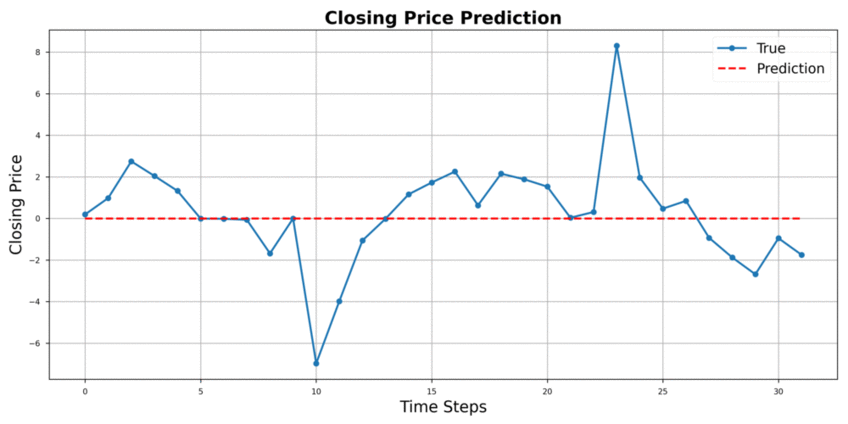

Tommaso Pieranti
I am a Mathematical Engineering graduate cum laude from Politecnico di Milano majoring in Quantitative Finance, based in Milan, Italy, with international experience at
TU Delft, in The Netherlands.
My master's thesis focused on developing an expansion of the Pontryagin's Maximum Principle for stochastic optimal control problems. It extended existing results to cases with the time horizon is part of the optimization.
During my studies, I specialized in stochastic processes, mathematical finance and financial engineering, implementing Python soutions for predictive modeling, time series analysis, and risk assessment problems.

Publications & Projects
A variational approach to Pontryagin's Maximum Principle for stochastic optimal control and stopping problems. (Master's Thesis, Politecnico di Milano, 2025)
This thesis develops a new variational approach to Pontryagin’s Maximum Principle for stochastic optimal control problems, including settings where the terminal time is itself a control variable. By combining functional analysis, Backward Stochastic Differential Equations (BSDEs), and control theory, it establishes necessary optimality conditions for random dynamical systems and illustrates them on quadratic control and natural resource valuation problems.
PDF|

Tail-GAN: Comprehensive review and Implementation Insights (TU Delft 2024)
This project provides a comprehensive review and implementation insights of Tail-GAN, a generative adversarial network (GAN) architecture designed for modeling heavy-tailed distributions in financial data. The study delves into the architecture, training procedures, and performance evaluation of Tail-GAN, highlighting its effectiveness in capturing extreme events and tail dependencies in financial time series.